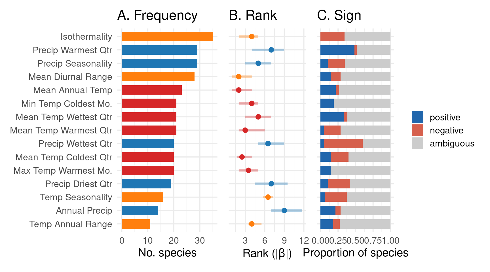
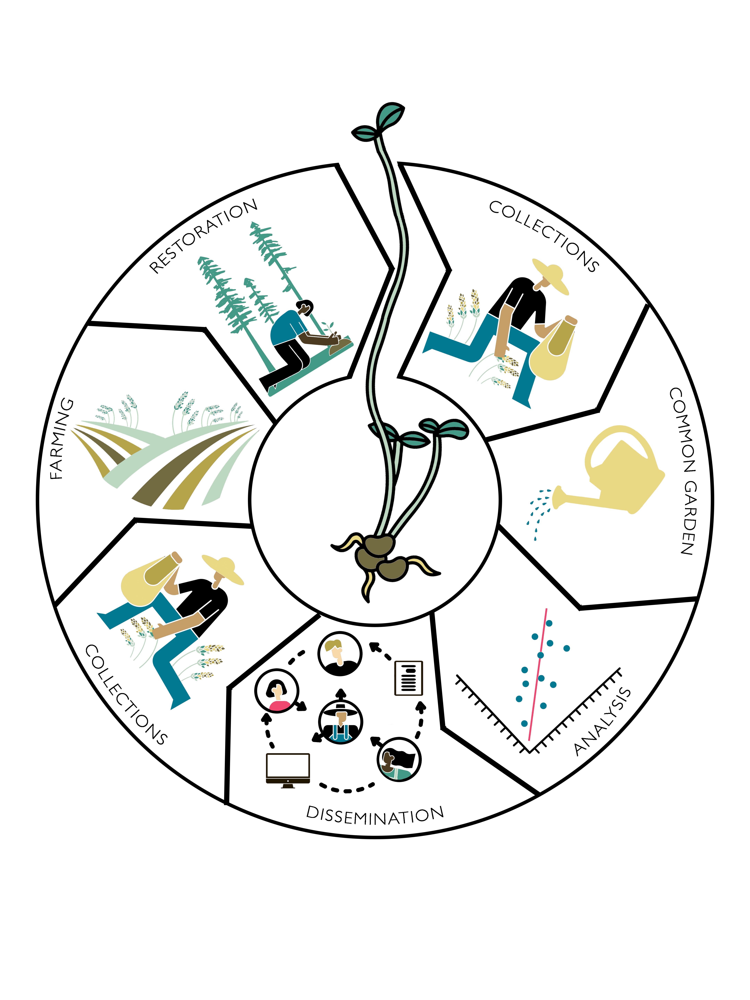
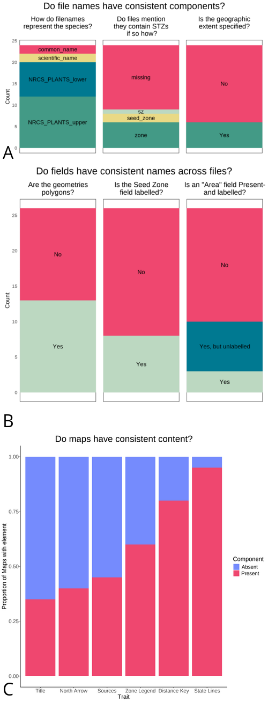
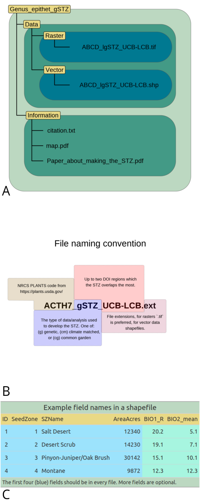
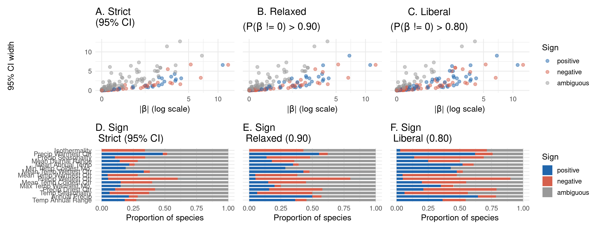

safeHavens and eSTZwritR; R packages for prioritising germplasm collections for restoration and conservation
Abstract
Effective germplasm collection is critical for both in situ restoration and ex situ conservation. Accessible, spatially explicit tools are needed to identify the best strategy for germplasm collection and support conservation. Here we present two R packages to facilitate these goals. The first, safeHavens, aims to maximise coverage of genetic diversity across a species’ range by partitioning it into zones based on geographic, resistance, and/or environmental, distances. The package accommodates both common and data-limited species, supports planning for future climate scenarios, and produces outputs compatible with in-field use by collectors. The second package, eSTZwritR, addresses formatting and dissemination of empirical seed transfer zones (eSTZs). Drawing on a review of 23 eSTZ products across the Western United States, we identified widespread inconsistencies in file naming, directory structure, field attributes, amongst others, and developed standardised conventions to resolve them. These tools support the germplasm collections from designing spatially explicit sampling schemes to sharing results with practitioners.
Introduction
Estimates suggest that 45% of flowering plant species are at risk of extinction (Isbell et al., 2023; Bachman et al., 2024). This risk is in part due to the loss of genetic diversity resulting from habitat loss and fragmentation, which reduces populations’ capacity to adapt to changing conditions (Frankham, 2005). Two growing responses to mitigate the loss of genetic diversity include the collection and storage of plant germplasm in ex situ collections and the restoration of habitats in situ (Volis and Blecher, 2010; Heywood, 2017; Westwood et al., 2021). In such cases, ex situ collections function as a stopgap measure to prevent further loss of genetic diversity and extinction while longer-term in situ conservation and habitat restoration strategies are developed and implemented to enhance habitat quality and quantity, and increase connectivity among remnant parcels (Gann et al., 2019). Achieving this requires collecting plant propagules and amplifying germplasm to meet the volumes required for use in restoration and conservation projects (Pedrini et al., 2020; Wambugu et al., 2023).
Central to developing germplasm collections is acquiring sufficient genetic diversity to meet conservation objectives. Most collections aim to maximise genetic variation across a species’ geographic and ecological range, increasing the likelihood of capturing both overall diversity and variation associated with local adaptation (Walters and Pence, 2021). Representative collections can enhance reintroduction success by improving populations’ capacity to respond to environmental fluctuations and long-term change. Realising this potential requires capturing geographic and habitat variation, allowing managers to match source material to restoration sites while maintaining adequate genetic diversity (Johnson et al., 2010; Vander Mijnsbrugge et al., 2010).
Germplasm collection strategies face challenges, including fieldwork costs, logistical challenges, small population sizes, and environmental stochasticity (Li and Pritchard, 2009; Erickson and Halford, 2020). To maximise coverage and efficiency, seed banks generally rely on rule-of-thumb guidelines derived from agricultural and population genetics studies, specifying minimum numbers of individuals per population and populations per species to meet diversity targets (Brown and Marshall, 1995; Hay and Probert, 2013; Westwood et al., 2021). However, these guidelines do not guarantee success for all species due to variation in population genetic structure, vital rates, and species-specific biology (Whitlock et al., 2016; Hoban et al., 2020; Bucharova et al., 2025; Höfner et al., 2025), and their application often relies on generalised datasets such as provisional seed transfer zones (STZs) or ecoregions, which may not reflect the biology of individual taxa (Durka et al., 2017; Davidson and Germino, 2020).
Guidelines have evolved to emphasise population genetic structure, spatial sampling, and mating systems, particularly for poorly connected taxa (Loveless and Hamrick, 1984; Duminil et al., 2007; Hoban and Schlarbaum, 2014; White et al., 2025). While traditional strategies often followed a “local is best” paradigm, recent evidence highlights the benefits of maximising genetic diversity and using climate-smart source populations to improve restoration outcomes and long-term persistence under environmental change (Breed et al., 2013; Broadhurst et al., 2016; Offord and Meagher, 2021). Integrating genetic and ecological data allows managers to match source material to restoration sites, ensuring ex situ collections support both conservation and nature-based solutions. Despite these advances, few empirical studies have rigorously compared the effectiveness of different seed collection strategies, highlighting the need for further research.
Currently, two main approaches guide restoration germplasm collections. Provisional seed transfer zones (pSTZs), the most widely used, delineate regions of similar climate (e.g., aridity, minimum winter temperatures) and may be further subdivided by ecoregions (Bower et al., 2014; Shryock et al., 2017; Pike et al., 2020). Empirical seed transfer zones (eSTZs) integrate molecular and quantitative data from common gardens to model areas where a source population is expected to perform well (Johnson et al., 2010). For most taxa, however, the data required to develop empirical STZs are unavailable, making provisional STZs essential despite known limitations. pSTZs may not capture the variables most important in shaping individual species’ distributions or adaptive variation and can be problematic for climate specialists with narrow niches or ranges (Johnson et al., 2010; Harrison et al., 2023; Höfner et al., 2025). To address this, several groups have developed species-specific pSTZs using computational approaches such as random forest regression of species distributions and clustering of variable importance to better identify adaptive variation relevant for restoration (Parra-Quijano et al., 2012; Doherty et al., 2017; Crow et al., 2018; Marinoni et al., 2021).
Given this challenge, we present two geospatial software packages that are easily accessible to identify the best strategy for germplasm collection and support positive conservation outcomes. Both packages are free and open-source software (FOSS) developed in R and require minimal familiarity with R to use. The first tool, safeHavens (https://sagesteppe.github.io/safeHavens/), which has global coverage, aims to maximise the putative coverage of genetic variation across the entirety or subsets of a species’ range. The tool uses either: 1) geographic, 2) ecoregional, or 3) environmental distance proxies to partition species ranges and create collection areas in scenarios where seed transfer zones may not align with the objectives of curators. The second tool, tailored to the Western United States but globally applicable, eSTZwriter (https://sagesteppe.github.io/eSTZwritR/), assists quantitative geneticists in producing standardised geospatial empirical seed transfer zone data products for germplasm collectors.

safeHavens
Genetic structure throughout a species’ range results from divergence (adaptation & genetic drift) and isolation (gene flow and migration) acting on and among populations (Hampe and Petit, 2005; Duminil et al., 2007). Processes that are modulated by environmental factors that vary in space (Chung et al., 2023). The safeHavens package develops taxon-specific sampling schemes to maximise either genetic diversity or adaptive potential, by partitioning species ranges into geographically constrained areas by utilising three types of distances which have been empirically shown to influence species genetic structures: geographic distance, landscape resistance or environmental distances (Slatkin, 1993; McRae, 2006; Wang and Bradburd, 2014; Durka et al., 2025). Isolation by distance is observed when differentiation between populations increases with increasing geographic distance (Slatkin, 1993). Isolation-by-resistance is exhibited when gene flow is most strongly determined by landscape features that act as either barriers (mountains and lakes) or corridors (habitat) to determine movement patterns (McRae, 2006). Isolation-by-environment (IBE) occurs when genetic distance increases with environmental dissimilarity, and may operate in conjunction with either of the above. In plants, IBE may arise from pollinator or seed-disperser habitat fidelity, or from decreased fitness of progeny expressing phenotypic traits maladapted to the recipient environment (Wang and Bradburd, 2014).
After statistical clustering of a distance, the geographic extent of the species is assigned to spatial regions for germplasm collections. These areas can be used to design germplasm collection efforts, assigning a desired number of target samples to each area, as in existing sampling approaches. The geospatial data generated by this process can then be sent to field crews to guide both the planning and implementation of collections.
Usage
All functions require two data sources: species occurrence data (e.g., from the Global Biodiversity Information Facility) and land surface vector data (e.g., from Natural Earth). Environmental modelling functions require additional raster covariates, such as bioclim variables (e.g. from Worldclim). The resistance surfaces require geomorphology variables (e.g., topographic roughness from EarthEnv) and, optionally, hydrology vector data for lakes and rivers (e.g., from the Global Lakes and Wetland Database). Users may model the entire range or subsets of species ranges, depending on their collection goals; however, models based on full species ranges will yield more accurate results, as they cover more environmental space (Thuiller et al., 2004).
The safeHavens package includes a variety of geographic functions to partition the species’ range into geographic areas that can serve as a basis for structuring spatial sampling. PointBasedSample generates a systematic sampling design for a specified number of collection sites. EqualAreaSample uses Voronoi polygons to create polygons of equal geographic area; IBDBasedSample identified clusters of the species range where habitat is more clustered. OpportunisticSample identifies additional sampling sites around existing collections to reach a user-specified sample size. These functions are adaptable to support a range of user specified sampel sizes for collection areas, and a single collection per geographic unit. A general vignette on the package, covering these functions, is available at Getting Started.
Landscape resistance to geneflow is modelled using the function IBRSurface and helpers: buildResistanceSurface, populationResistance, and an optional final draw from the generalised sampling function PolygonBasedSample. A single raster surface can be used as a generic domain-specific landscape (i.e. a surface for Western North America), or surfaces can be parameterised for individual species. The isolation-by-resistance workflow creates a theoretical surface, populated with user-specified values, that represents the cost of genetic material movement (e.g., fruits, seeds, and pollen) between populations; see Zeller et al. (2012) for caveats. It then calculates distances between a subset of cells within the species range to identify clusters of habitat that are least isolated from one another. A vignette on surface preparation is available at Isolation by Resistance.
Environmental distance, akin to the concept of isolation by environment, tailored to individual species, is modelled by EnvironmentalBasedSample and helpers: elasticSDM, PostProcessSDM, RescaleRasters, and, optionally, PolygonBasedSample and writeSDMResults. This workflow identifies user-supplied variables correlated with species occurrences, and clusters the species range into n specified areas using these variables and hierarchical clustering, similar to the approaches used in a variety of existing case studies on species-specific STZs (Doherty et al., 2017; Shryock et al., 2017; Crow et al., 2018; Marinoni et al., 2021). A vignette is available at Species Distribution Models.
An extension to EnvironmentalBasedSample that predicts the probability of suitable habitat under future climate scenarios, and assigns the identified environmental clusters, is supported by a Predictive Provenance workflow. This workflow stems from the EnvironmentalBasedSample workflow but does not include the PCNM surfaces in elasticSDM or coordinate weights in the clustering process. These novel climate areas are clustered independently of the existing clusters which are forecast into space, and the most similar existing cluster, which may serve as a potential seed source, is identified in two-stage clustering. A vignette is available at Predictive Provenance.
An alternative to the EnvironmentalBasedSample and Predictive Provenance workflow, which uses Bayesian hierarchical modelling and consensus clustering to provide uncertainty estimates, is also available. This workflow is conceptually similar to the EnvironmentalBasedSample workflow, requiring several replacement functions, bayesianSDM, RescaleRastersBayes, PosteriorCluster, and projectClusterBayes, to replace the predictive provenance-based workflow functions. A vignette is available at Bayesian Approaches.
PolygonBasedSample is a general utility function that operates on any type of polygon data and supports existing provisional or empirical seed transfer zones or ecoregion-level data PolygonBasedSample can incorporate multiple user-specified criteria to maximise sample counts across strata by size, number of disconnected areas, or, when the data are available, central tendency measures of climate variables. Accordingly, it can accommodate variables used to generate seed transfer zones or ecoregions loosely. A visual guide to these methods dispatched by this function is available at Polygon Based Sample.
Additionally, a function intended for sampling rare species, with few populations, based on raw population-level occurrence data, KMedoidsBasedSample, operates on geographic or environmental distances. When geographic distances are used as input and coordinate uncertainty data are available, this function jitters site coordinates within the uncertainty bounds to simulate their position. Simulations further drop populations that may be extinct, incorrectly identified, or of another taxon to identify results that are most resilient to data quality issues. The function uses co-location network strength to identify a set of populations that minimises the sum of distances in n user-specified groups. A vignette is available at Rare Species.
A final function that creates cartographic boundaries for use with mobile GIS apps is PrioritizeSample. This function creates concentric rings around the centre of each defined collection area to guide collectors towards the centre rather than sampling from the periphery. It is detailed only in a vignette that emulates the total process of performing an actual sample design for multiple species as would be done by a curator in the Worked Example.
Detailed Functionality
The isolation-by-resistance workflow is divided into three main phases to allow users to review, modify, and tailor intermediate objects. Resistance surface rasters are created using buildResistanceSurface, followed by the sampling of these surfaces to create distance matrices via populationResistance. Finally, the species range is clustered into groups with less resistance to movement within than between them using IBRSurface. The polygons from IBRSurface are then submitted to the general sampling function PolygonBasedSample if more than one collection per group is desired. buildResistanceSurface natively supports layers for oceans, lakes, rivers, topographic ruggedness, and a species distribution model’s probability surface, and also allows users to incorporate additional features and weights to parameterise the cost surface as desired. Pairwise distances across the cost surface and between randomly sampled sites within the buffered species range are used to create a distance matrix for clustering in populationResistance. Sampled locations are hierarchically clustered into n groups, and pixels within their buffered species ranges are iteratively assigned to each cluster using IBRSurface, with NbClust using the silhouette method (Charrad et al., 2014).
The data preparation for the EnvironmentalBasedSample is compartmentalised into several functions, allowing users to review, modify, and save intermediate outputs. A species distribution model, using user-specific explanatory (raster format) supplemented with internally derived low-order PCNM surfaces - uncorrelated geospatial predictors that account for large-scale geospatial relations, with internal occurrence data thinning, pseudo-absence generation, geospatial cross-validation folds, and automatic variable selection using elastic net regression and recursive feature elimination, is prepared using elasticSDM (Kuhn, 2008; Aiello-Lammens et al., 2015; Naimi and Araujo, 2016; Tay et al., 2023; Meyer et al., 2025; Oksanen et al., 2025). Raster-based habitat suitability predictions are converted from probabilities to a binary presence/absence surface using a user-specified threshold metric. Areas of known occupancy are optionally ‘burned’ back onto this binary raster surface, resulting in a surface that maximises coverage of the species’ occupied habitat, using PostProcessSDM (Hijmans et al., 2024; Hijmans, 2026). The environmental rasters, used as explanatory variables and included in the final SDM model, are rescaled based on their contributions (beta-coefficients) to the model to identify clusters of species ranges that share more similar relevant habitat characteristics, using RescaleRasters. Results from these processes may then be saved using writeSDMresults The germplasm collection sample is implemented by EnvironmentalBasedSample, which samples and clusters n locations across the raster surface. A k-nearest neighbour classifier is then trained on a relatively class-balanced resampling of these clusters, and geospatial clusters are identified using its predictions (Venables and Ripley, 2002).
KMedoidsBasedSample is intended for use with species with up to a couple of hundred records, and maximises geographic coverage (by minimising the sum of geographic or environmental dissimilarities) across n collections by identifying individual populations to sample, while accounting for common data quality issues in occurrence data. KMedoidsBasedSample is the only function in safeHavens that returns individual population-level data rather than generalised polygonal geometries for sampling. From user-specified data, occurrence records that are to undergo coordinate jittering, as well as those that may undergo population dropout (due to misidentifications, conflicting taxonomy, or local extinction), are identified. A user-specified number of bootstrap simulations permutes eligible sites, and updated distance matrices are repeatedly fed into K-medoids within each run; multiple restarts are allowed to minimise the solution cost at each iteration (Maechler et al., 2025). Across all bootstrap iterations, each unique combination of candidate sites (set) is counted to identify the network of sites with the lowest cost (highest co-location strength), and the individual sites within this network are ordered by the number of times they were returned across all bootstrap simulations.
The Bayesian approach to IBE largely performs the same steps as the EnvironmentalBasedSample and predictive Provenance workflow, with modifications to better incorporate uncertainty. bayesianSDM its model fitting function wrapper, optionally performs forward rather than recursive feature selection, or generation of PCA axis for predictors, to identify performant variables before using brms with horseshoe priors to fit a model that includes a spline to reduce the effects of spatial autocorrelation of residuals on the interpretation of model parameters (Wood, 2003, 2017; Bürkner, 2017; R Core Team, 2025). The model posteriors, a rescaled raster stack RescaleRastersBayes, are then clustered via PosteriorCuster using sampling from the posterior draws. The consensus clustering results are identified via co-location, and the most stable results, alongside uncertainty estimates, are returned. Predictive provenance functionality is supported with the ProjectClusterBayes function.
safeHavens Methods (to be merged)
safeHavens was used to identify areas for sourcing germplasm for a local Chicago, Illinois, USA restoration program. 60 desired, yet difficult to source locally, species were identified through a partnership between the Chicago Botanic Garden with the Forest Preserves of Cook County. All occurrence records for these species from 1950 through 2025, without coordinate issues were downloaded from GBIF. min 46, max 14,626, median 1252. Species, occurrence records in North America (within WGS84 longitude -48 to -170, latitude 24 to 85), were modelled using the Bayesian Predictive provenance workflow, using a planar projection of ESRI 102008. Environmental predictors included all bioclim variables less: bio09 (excluded due to creating ‘hard’ surface borders in the Southeast), bio13, bio14, bio19 (all due to redundancy with seasonal metrics) were used as indepdent variables. Absences were generated with a 1:2.5 ratio to presences per species, and all other parameters ran using default settings.
eSTZwritR
Empirical seed transfer zones (eSTZs) are gaining popularity among restoration practitioners as tools to identify the most appropriate seed source for a species at a restoration site (McKay et al., 2005). eSTZs are becoming more widely used for two primary reasons: 1) they are based on empirical data, such as phenotypes in a common garden, and 2) there are generally fewer zones than provisional seed transfer zones, thereby reducing the number of lineages that require cultivation in agricultural settings. Although popular, developing eSTZs for a species is costly and time-consuming, often involving common gardens or genetic studies, with many populations from across the species’ range incorporated as samples (Kramer et al., 2015).
While practices for developing eSTZs are becoming more defined, to our knowledge, no standards exist for sharing eSTZ results (Supplemental 1). Although eSTZs are produced by a handful of research groups, inconsistencies vary across the geospatial data products used to report and share eSTZs.
The success of a restoration project depends on the timely application of techniques appropriate to the site. Hence, the dissemination of ideas during and after a restoration project is the best opportunity to improve restoration outcomes (Figure 1). However, geospatial data are notoriously complex and difficult to transmit, historically requiring specialised software, and both written and geographic data (e.g., coordinates and their relationships) in the form of geospatial data products (e.g., rasters and shapefiles) to convey their meaning accurately. Given the relative complexity of communicating precise geospatial information, standards should exist to ensure not only its accuracy and precision but also its ease of interpretation and use.
Software
To make these suggestions easy to implement, we have created an R package, eSTZwritR (pronounced ‘easy rider’), that implements all of them, except for statistical processing, with minimal user input. The package is available from GitHub (https://github.com/sagesteppe/eSTZwritR) and includes a GitHub Pages website (https://sagesteppe.github.io/eSTZwritR/) for users seeking a better understanding of its functionality, which provides supplemental figures and details not discussed here.
The package requires only five functions to generate a directory containing the contents described above, with minimal data entry. Most importantly, the entries are well-organised and easy to enter without requiring close attention to detail. These results should allow for the simple utilisation of existing empirical seed-transfer zone resources. This software was designed based on a review of the data sets (Appendix 1).
Methods
Using 23 sets of eSTZs produced for 22 taxa across the western United States, we showed that most of the geospatial data developed and disseminated to share eSTZ results are inconsistent (Supplemental 1). We have already observed significant hindrances to the uptake of these data at the practitioner level and have sought consensus among them. Subsequently, using consensus (wisdom of the masses) from these data, combined with standard data-sharing conventions, we present a set of guiding standards for researchers in the United States to help ensure more consistent results.
We conducted a review of all eSTZs on the Western Wildland Environmental Threat Assessment Center (WWETAC) website as of May 1, 2024 (https://research.fs.usda.gov/pnw/products/dataandtools/datasets/seed-zone-gis-data). Each data product (file name structure, field naming conventions, and directory structure) was manually scored, and all analyses were performed in R version 4.2.1.
Results

In Figure 2, we present inconsistencies that we believe, or have observed, to interfere with practitioners’ workflows. We encountered considerable inconsistencies in file names (Figure 2A), directory structure and naming (Figure 2B), and the cartographic elements of the 20 maps available (Figure 2C). While some consensus existed around the use of USDA NRCS-Plants codes for denoting the taxon contained in the file (Figure 2), the lack of file names mentioning what attribute about the taxon they contained (e.g. ‘zones,’ ‘seed_zone,’ ‘sz’), and the lack of specified geographic extents can make determining the specifics of the file difficult unless it is explicitly opened in a Geographic Information System (GIS) software.
The naming of the fields (columns) within the vector data file presented the most problematic results (Figure 2B). Here, we focus only on three inconsistencies. Different uses of polygon geometry were implemented to represent the individual seed transfer zones, that is, sometimes all portions of a seed transfer zone, when at least some components are disconnected, where stored within the same object or row (i.e., multipolygon, a data set that includes at least two spatially separated parts). At other times, each discontinuous portion of the range was stored as its own polygon. For most infrequent Geographic Information System (GIS) users, we observed that multipolygons can be confusing and require them to use several moderately advanced geospatial techniques to interact with. Surprisingly, within each shapefile, the field denoting the seed zones was often ambiguously labelled or entirely lacking any indication (Figure 2B). In several instances, it took several minutes to determine which field was the seed zone by toggling through and visualising many fields, despite our having already interfaced with all of these products multiple times.
safeHavens Results
Two species were removed from evaluation due to substandard model performance, one Lilium philadephicum appeared to have taxonomically inconsisent applications, and difficulty in having enough ‘wild’ records for modelling (), the other Luzula multiflora also seems to have taoxnomic inconsistenceies (AND CITE). Evaluation metrics, computed using a standard 0.5 threshold for binarizing outcomes, are shown with the removal of these records. Despite only allowing for the use of additive terms, models maintain highly performant with high balanced accuracy (min = 0.82, mean = 0.95), and high f1 scores (the ability of the model to correctly identify true occurrence records; min = 0.76, mean = 0.92). Models were able to identify presence records ‘sensitivity’ (min = 0.74, mean = 0.94), while maintaning specificity in these classifications (min = 0.9, mean = 0.95)
Of the nn modelled species the number of identified seed zones varied from (min = 3, max = 10, mean = 6.7173913). The number of eastern Provisional seed transfer zones entirely contained within these regions (US only) are: , and the average number of partially overlapping zones is: . XX of these are expected to have a change in seed zone between the current and SSP 4.5 projections in climate for the near future (2041-2060).
All uncertainty intervals reported for model coefficients are 95% Bayesian credible intervals (CIs), not frequentist confidence intervals. A 95% credible interval has the direct probabilistic interpretation that there is a 0.95 posterior probability that the true parameter value lies within the interval, given the data and priors.
Discussion
There is consensus among eSTZ developers on a range of attributes related to the distribution of data products. Combining these opinions with best practices for data sharing and experience as users of each existing empirical product yields the following recommendations.
Directory Structure

eSTZs should be distributed using a predictable directory structure that makes it immediately clear where to find the content (Figure 3A). We recommend that all directories (folders) have two main subdirectories (Figure 3A), one containing the essential data products, preferably in both raster and vector data formats (see ‘Data Formats’). The second directory contains information related to the product, including a formatted citation for data use, a map for quick reference, and any materials describing the product’s development, both as a paper and as a text file with quick metadata attributes.
File Naming
The files within the directory should follow an easily interpretable naming convention that allows users to import data to various software while also describing the essential attributes of the data product. We recommend (Figure 3B) that each file name has three main components. The first component is the USDA PLANTS code. The second is the method used to develop the STZ - currently one of ‘g’, ‘cg’, ‘cm’ (for genetic, common garden, and climate matched, respectively), and the final is up to the two main regions, which the product overlaps. In the United States, we recommend using the 12 Department of the Interior regions, as they cover contiguous geographic expanses, are few enough to be easily remembered, and balance L2 Omernik ecoregions with state lines that are easier to remember.
However, in other nations, the use of ecoregions may be more desirable.
Maps
Maps of the data product should be included in the ‘Information’ directory. Many questions about eSTZs can be answered quickly and simply by a practitioner consulting a PDF map with the essential cartographic components; fortunately, most developers already supply these. We recommend that each map contains the following elements: north arrow, scale bar, state borders, geographically relevant cities, coordinate reference system information, sensible categorical color schemes for the seed zones (e.g., from ColorBrewer https://colorbrewer2.org), a legend, the taxon’s name as a title, and the maps theme (‘Seed Transfer Zones’) as a subtitle.
Data Formats
We recommend that the geospatial data associated with an eSTZ be distributed using both popular geospatial data models, vector and raster. For vector data, we advocate continued use of the shapefile format, whereas for raster data, we propose using geoTIFFs (‘tifs’ with the .tif extension). In our experience, TIFs are the most widely used raster data models in ecology for non-time-series data and are supported by virtually all GIS software.
Vector Data Field Attributes
The order of the fields (or columns) in the vector data should follow a predictable pattern (Figure 3C), enabling humans to interact with the data in a graphical user interface (GUI) and quickly identify their field of interest.
We recommend that each vector file include at least four fields in the following order, with the following data types.
1) The numeric integer (ID) is a unique number associated with each polygon in the file.
2) Seed Zone (numeric integer): a unique identifier for each of the eSTZs delineated by the product developers, which allows for quick filtering of the data based on a simple numeric value that is difficult to misspecify.
3) SZName (character): a human-developed name for the zone that may refer to an axis of a principal component analysis, for example, ‘LOW MEDIUM LOW’, or defined by the product developers. We propose that semi-informative names be developed before data distribution to help practitioners more easily convey important attributes.
4) AreaAcres (numeric - integer) of each polygon.
In addition to these standard field naming and placement conventions, we recommend standards for the contents of these essential fields and for the formatting of any additional fields relevant to the project (see the package website).
Discussion
Here, we present two packages to enhance the availability of native germplasm, thereby increasing the likelihood of success for terrestrial restoration and ex situ conservation (Mattana et al., 2025). Combining these opinions with best practices for data sharing and user experience with each existing empirical product yields the following recommendations. The safeHavens program supplies collectors and planners with tools to delineate options for sampling programs, rooted in landscape genetics, and allowing for species-specific tailoring via a variety of modelling approaches. safeHavens provides a range of functions to support sample designs across diverse curatorial perspectives. Functions may use pre-existing data sets that delineate seed collection zones (e.g. pSTZs, eSTZs, ecoregions), create collection regions based on geographic, resistance, or environmental distance, or for sampling populations directly. Full functionality of the package requires only a few sources of external data, all of which are free and global in coverage. eSTZwritR facilitates communication and the sharing of research findings among research groups, germplasm curators, field crews, and restoration ecologists. It can be used to identify priority collection areas and identify appropriate seed sources for restoration, using empirical quantitative genetics data.
An identified improvement for eSTZs data products is the inclusion of spatially explicit estimates of zone uncertainty, which must be represented as raster data. In the collection regions identified in safeHavens (elasticSDM and bayesianSDM), the area of applicability surface is used to restrict predictions to multivariate regions of environmental space covered by the training set, to which the statistical models can make inference (Meyer et al., 2025). Within these areas, surfaces of overall group stability are returned by running multiple clustering iterations with draws from the parameter posteriors, identifying areas of more stable classification, as well as the second and third-most commonly assigned classes. These uncertainty estimates can help curators and restoration ecologists hedge bets in their decisions by providing enriched contextual data.
Re-contextualising what “local” means for restoration in an era of rapid climate change is far from complete; however, some consensus has formed amongst practitioners (Havens et al., 2015; Prober et al., 2015; Smith et al., 2016; Vitt et al., 2022). Several voices call for combining populations that are local in genetic or projected climate environmental space to the restoration site (Bucharova et al., 2019). safeHavens helps stratify species ranges to accommodate the collection of material for any approach, whether geographic (e.g. IsolationByDistance), genetic (IsolationByResistance), or current (EnvironmentalBasedSample / PosteriorCluster) or future environmental space (projectClusters / projectClustersBayes). Indeed, while this release of safeHavens does not include restoration planting guidance, several recent studies have found that decoupling collection and restoration concepts may be beneficial to gather adequate source material when it is available (Davidson and Germino, 2020; St. Clair et al., 2022; Barga et al., 2023; Harrison et al., 2023; Winkler et al., 2024).
Conclusions
Many opinions exist regarding the goals of restoration and germplasm conservation, as well as the suitability of various seed-sourcing strategies for restoration plantings (Vitt et al., 2022). Here we present free and open-source software and link to vignettes with well-documented workflows that aim to support the immediate goal of growing collections suitable for short- or long-term goals via safeHavens. We further present software eSTZwritR to enhance the sharing of empirical seed transfer zone data products. In closing, we hope that any parties worldwide interested in collecting native seed will be able to develop and immediately implement plans to collect materials.
ORCID
Jeremie Fant https://orcid.org/0000-0001-9276-1111
Sophie Taddeo https://orcid.org/0000-0002-7789-1417
Chris Woolridge https://orcid.org/0000-0002-2721-2092
Acknowledgements
The Bureau of Land Management for partially funding the development of these tools through a contract with the Chicago Botanic Garden. Emily Woodworth for creating the ‘Dissemination’ figure. Claude, from Anthropic, is acknowledged for assistance with coding development for portions of the safeHavens package.
Data Availability Statement
All data used in the manuscript, those for the analyses in the eSTZwritR portion, are available at the publishers website.
Literature Cited
Aiello-Lammens, M. E., R. A. Boria, A. Radosavljevic, and B. Vilela. 2015. spThin: An R package for spatial thinning of species occurrence records for use in ecological niche models. Ecography 38: 541–545.
Bachman, S. P., M. J. M. Brown, T. C. C. Leão, E. Nic Lughadha, and B. E. Walker. 2024. Extinction risk predictions for the world’s flowering plants to support their conservation. New Phytologist 242: 797–808. https://doi.org/https://doi.org/10.1111/nph.19592
Barga, S. C., F. F. Kilkenny, S. Jensen, S. M. Kulpa, A. C. Agneray, and E. A. Leger. 2023. Not all seed transfer zones are created equal: Using fire history to identify seed needs in the cold deserts of the Western United States. Restoration Ecology 31: e14007.
Bower, A. D., J. B. S. Clair, and V. Erickson. 2014. Generalized provisional seed zones for native plants. Ecological Applications 24: 913–919.
Breed, M. F., M. G. Stead, K. M. Ottewell, M. G. Gardner, and A. J. Lowe. 2013. Which provenance and where? Seed sourcing strategies for revegetation in a changing environment. Conservation Genetics 14: 1–10.
Broadhurst, L. M., T. A. Jones, F. S. Smith, T. North, and L. Guja. 2016. Maximizing seed resources for restoration in an uncertain future. BioScience 66: 73–79.
Brown, A., and D. Marshall. 1995. A basic sampling strategy: Theory and practice. Collecting plant genetic diversity: technical guidelines. CAB International, Wallingford: 75–91.
Bucharova, A., O. Bossdorf, N. Hölzel, J. Kollmann, R. Prasse, and W. Durka. 2019. Mix and match: Regional admixture provenancing strikes a balance among different seed-sourcing strategies for ecological restoration. Conservation Genetics 20: 7–17.
Bucharova, A., O. Bossdorf, J. Scheepens, and R. Salguero-Gómez. 2025. Assessing limits of sustainable seed harvest in wild plant populations. Conservation Biology: e70075.
Bürkner, P.-C. 2017. brms: An R package for Bayesian multilevel models using Stan. Journal of Statistical Software 80: 1–28. https://doi.org/10.18637/jss.v080.i01
Charrad, M., N. Ghazzali, V. Boiteau, and A. Niknafs. 2014. NbClust: An R package for determining the relevant number of clusters in a data set. Journal of Statistical Software 61: 1–36.
Chung, M. Y., J. Merilä, J. Li, K. Mao, J. López-Pujol, Y. Tsumura, and M. G. Chung. 2023. Neutral and adaptive genetic diversity in plants: An overview. Frontiers in Ecology and Evolution 11: 1116814.
Crow, T. M., S. E. Albeke, C. A. Buerkle, and K. M. Hufford. 2018. Provisional methods to guide species-specific seed transfer in ecological restoration. Ecosphere 9: e02059.
Davidson, B. E., and M. J. Germino. 2020. Spatial grain of adaptation is much finer than ecoregional-scale common gardens reveal. Ecology and Evolution 10: 9920–9931.
Doherty, K. D., B. J. Butterfield, and T. E. Wood. 2017. Matching seed to site by climate similarity: Techniques to prioritize plant materials development and use in restoration. Ecological Applications 27: 1010–1023.
Duminil, J., S. Fineschi, A. Hampe, P. Jordano, D. Salvini, G. G. Vendramin, and R. J. Petit. 2007. Can population genetic structure be predicted from life-history traits? The American Naturalist 169: 662–672.
Durka, W., S. G. Michalski, K. W. Berendzen, O. Bossdorf, A. Bucharova, J.-M. Hermann, N. Hölzel, et al. 2017. Genetic differentiation within multiple common grassland plants supports seed transfer zones for ecological restoration. Journal of Applied Ecology 54: 116–126.
Durka, W., S. G. Michalski, J. Höfner, A. Bucharova, F. Kolář, C. M. Müller, C. Oberprieler, et al. 2025. Assessment of genetic diversity among seed transfer zones for multiple grassland plant species across Germany. Basic and Applied Ecology 84: 50–60.
Erickson, V. J., and A. Halford. 2020. Seed planning, sourcing, and procurement. Restoration Ecology 28: S219–S227.
Frankham, R. 2005. Genetics and extinction. Biological Conservation 126: 131–140. https://doi.org/10.1016/j.biocon.2005.05.002
Gann, G. D., T. McDonald, B. Walder, J. Aronson, C. R. Nelson, J. Jonson, J. G. Hallett, et al. 2019. International principles and standards for the practice of ecological restoration. Restoration Ecology. 27 (S1): S1-S46. 27: S1–S46.
Hampe, A., and R. J. Petit. 2005. Conserving biodiversity under climate change: The rear edge matters. Ecology Letters 8: 461–467.
Harrison, S. P., D. Atcitty, R. Fiegener, R. Goodhue, K. Havens, C. C. House, R. C. Johnson, et al. 2023. An assessment of native seed needs and the capacity for their supply. Washington, DC: The National Academies Press. 221 p.
Havens, K., P. Vitt, S. Still, A. T. Kramer, J. B. Fant, and K. Schatz. 2015. Seed sourcing for restoration in an era of climate change. Natural Areas Journal 35: 122–133.
Hay, F. R., and R. J. Probert. 2013. Advances in seed conservation of wild plant species: A review of recent research. Conservation Physiology 1: cot030.
Heywood, V. H. 2017. Plant conservation in the Anthropocene–challenges and future prospects. Plant Diversity 39: 314–330.
Hijmans, R. J. 2026. Terra: Spatial data analysis. https://doi.org/10.32614/CRAN.package.terra
Hijmans, R. J., S. Phillips, J. Leathwick, and J. Elith. 2024. Dismo: Species distribution modeling. https://doi.org/10.32614/CRAN.package.dismo
Hoban, S., T. Callicrate, J. Clark, S. Deans, M. Dosmann, J. Fant, O. Gailing, et al. 2020. Taxonomic similarity does not predict necessary sample size for ex situ conservation: A comparison among five genera. Proceedings of the Royal Society B 287: 20200102.
Hoban, S., and S. Schlarbaum. 2014. Optimal sampling of seeds from plant populations for ex-situ conservation of genetic biodiversity, considering realistic population structure. Biological Conservation 177: 90–99.
Höfner, J., A. Bucharova, W. Durka, and S. G. Michalski. 2025. Spatial patterns of genomic variation and genomic offset in a common grassland plant and their relation to seed transfer zones. Ecology and Evolution 15: e72152.
Isbell, F., P. Balvanera, A. S. Mori, J.-S. He, J. M. Bullock, G. R. Regmi, E. W. Seabloom, et al. 2023. Expert perspectives on global biodiversity loss and its drivers and impacts on people. Frontiers in Ecology and the Environment 21: 94–103.
Johnson, R., L. Stritch, P. Olwell, S. Lambert, M. E. Horning, and R. Cronn. 2010. What are the best seed sources for ecosystem restoration on BLM and USFS lands? Native Plants Journal 11: 117–131.
Kramer, A. T., D. J. Larkin, and J. B. Fant. 2015. Assessing potential seed transfer zones for five forb species from the Great Basin Floristic Region, USA. Natural Areas Journal 35: 174–188.
Kuhn, M. 2008. Building predictive models in R using the caret package. Journal of Statistical Software 28: 1–26. https://doi.org/10.18637/jss.v028.i05
Li, D.-Z., and H. W. Pritchard. 2009. The science and economics of ex situ plant conservation. Trends in Plant Science 14: 614–621.
Loveless, M. D., and J. L. Hamrick. 1984. Ecological determinants of genetic structure in plant populations. Annual review of ecology and systematics: 65–95.
Maechler, M., P. Rousseeuw, A. Struyf, M. Hubert, and K. Hornik. 2025. Cluster: Cluster analysis basics and extensions.
Marinoni, L., M. Parra Quijano, J. M. Zabala, J. F. Pensiero, and J. Iriondo. 2021. Spatiotemporal seed transfer zones as an efficient restoration strategy in response to climate change. Ecosphere 12: e03462.
Mattana, E., S. Godefroid, S. Miles, A. Carta, A. Ensslin, T. Chapman, and J. Viruel. 2025. Looking back to look ahead: The temporal dimension of conservation seed bank collections. New Phytologist 247: 1589–1598.
McKay, J. K., C. E. Christian, S. Harrison, and K. J. Rice. 2005. “How local is local?”—a review of practical and conceptual issues in the genetics of restoration. Restoration Ecology 13: 432–440.
McRae, B. H. 2006. Isolation by resistance. Evolution 60: 1551–1561.
Meyer, H., C. Milà, M. Ludwig, J. Linnenbrink, and F. Schumacher. 2025. CAST: ’Caret’ applications for spatial-temporal models. https://doi.org/10.32614/CRAN.package.CAST
Naimi, B., and M. B. Araujo. 2016. SDM: A reproducible and extensible R platform for species distribution modelling. Ecography 39: 368–375. https://doi.org/10.1111/ecog.01881
Offord, C. A., and P. F. Meagher. 2021. Plant germplasm conservation in Australia: Strategies and guidelines for developing, managing and utilising ex situ collections. Australian Network for Plant Conservation.
Oksanen, J., G. L. Simpson, F. G. Blanchet, R. Kindt, P. Legendre, P. R. Minchin, R. B. O’Hara, et al. 2025. Vegan: Community ecology package. https://doi.org/10.32614/CRAN.package.vegan
Parra-Quijano, M., J. Iriondo, and E. Torres. 2012. Improving representativeness of genebank collections through species distribution models, gap analysis and ecogeographical maps. Biodiversity and Conservation 21: 79–96.
Pedrini, S., P. Gibson-Roy, C. Trivedi, C. Gálvez-Ramı́rez, K. Hardwick, N. Shaw, S. Frischie, et al. 2020. Collection and production of native seeds for ecological restoration. Restoration Ecology 28: S228–S238.
Pike, C., K. M. Potter, P. Berrang, B. Crane, J. Baggs, L. Leites, and T. Luther. 2020. New seed-collection zones for the eastern United States: The Eastern seed zone forum. Journal of Forestry 118: 444–451.
Prober, S. M., M. Byrne, E. H. McLean, D. A. Steane, B. M. Potts, R. E. Vaillancourt, and W. D. Stock. 2015. Climate-adjusted provenancing: A strategy for climate-resilient ecological restoration. Frontiers in Ecology and Evolution 3: 65.
R Core Team. 2025. R: A language and environment for statistical computing. R Foundation for Statistical Computing, Vienna, Austria.
Shryock, D. F., C. A. Havrilla, L. A. DeFalco, T. C. Esque, N. A. Custer, and T. E. Wood. 2017. Landscape genetic approaches to guide native plant restoration in the Mojave Desert. Ecological Applications 27: 429–445.
Slatkin, M. 1993. Isolation by distance in equilibrium and non-equilibrium populations. Evolution 47: 264–279.
Smith, A. B., Q. G. Long, and M. A. Albrecht. 2016. Shifting targets: Spatial priorities for ex situ plant conservation depend on interactions between current threats, climate change, and uncertainty. Biodiversity and Conservation 25: 905–922.
St. Clair, J. B., B. A. Richardson, N. Stevenson-Molnar, G. T. Howe, A. D. Bower, V. J. Erickson, B. Ward, et al. 2022. Seedlot selection tool and climate-smart restoration tool: Web-based tools for sourcing seed adapted to future climates. Ecosphere 13: e4089.
Tay, J. K., B. Narasimhan, and T. Hastie. 2023. Elastic net regularization paths for all generalized linear models. Journal of Statistical Software 106: 1–31. https://doi.org/10.18637/jss.v106.i01
Thuiller, W., L. Brotons, M. B. Araújo, and S. Lavorel. 2004. Effects of restricting environmental range of data to project current and future species distributions. Ecography 27: 165–172.
Vander Mijnsbrugge, K., A. Bischoff, and B. Smith. 2010. A question of origin: Where and how to collect seed for ecological restoration. Basic and Applied Ecology 11: 300–311.
Venables, W. N., and B. D. Ripley. 2002. Modern applied statistics with S. Fourth. Springer, New York.
Vitt, P., J. Finch, R. S. Barak, A. Braum, S. Frischie, and I. Redlinski. 2022. Seed sourcing strategies for ecological restoration under climate change: A review of the current literature. Frontiers in Conservation Science 3: 938110.
Volis, S., and M. Blecher. 2010. Quasi in situ: A bridge between ex situ and in situ conservation of plants. Biodiversity and Conservation 19: 2441–2454.
Walters, C., and V. C. Pence. 2021. The unique role of seed banking and cryobiotechnologies in plant conservation. Plants, People, Planet 3: 83–91.
Wambugu, P. W., D. O. Nyamongo, and E. C. Kirwa. 2023. Role of seed banks in supporting ecosystem and biodiversity conservation and restoration. Diversity 15: 896.
Wang, I. J., and G. S. Bradburd. 2014. Isolation by environment. Molecular Ecology 23: 5649–5662.
Westwood, M., N. Cavender, A. Meyer, and P. Smith. 2021. Botanic garden solutions to the plant extinction crisis. Plants, People, Planet 3: 22–32.
White, K., F. Cornwell-Davison, C. Cockel, T. Chapman, E. Mattana, and J. Viruel. 2025. Application of a biological trait-based framework for plant species conservation assessments in ecological restoration. Restoration Ecology 33: e14391.
Whitlock, R., H. Hipperson, D. B. Thompson, R. K. Butlin, and T. Burke. 2016. Consequences of in-situ strategies for the conservation of plant genetic diversity. Biological Conservation 203: 134–142.
Winkler, D. E., S. Sterner, J. B. Bradford, A. M. Pilmanis, and R. Massatti. 2024. Matching existing and future native plant materials to disturbance-driven restoration needs. Restoration Ecology 32: e14088.
Wood, S. N. 2017. Generalized Additive Models: An introduction with R. 2nd ed. Chapman; Hall/CRC.
Wood, S. N. 2003. Thin-plate regression splines. Journal of the Royal Statistical Society (B) 65: 95–114. https://doi.org/10.1111/1467-9868.00374
Zeller, K. A., K. McGarigal, and A. R. Whiteley. 2012. Estimating landscape resistance to movement: A review. Landscape Ecology 27: 777–797.
Figures
Supplemental Materials
